Using the Wizard
For this guide, we'll be using the movie Big Buck Bunny (2008).
General
Complete name : bbb_sunflower_1080p_30fps_stereo_arcc.mp4
Format : MPEG-4
Format profile : Base Media
Codec ID : isom (isom/avc1)
File size : 339 MiB
Duration : 10 min 34 s
Overall bit rate : 4 476 kb/s
Frame rate : 30.000 FPS
Movie name : Big Buck Bunny, Sunflower version
Performer : Blender Foundation 2008, Janus Bager Kristensen 2013
Composer : Sacha Goedegebure
Genre : Animation
Encoded date : 2013-12-16 17:49:00 UTC
Tagged date : 2013-12-16 17:49:00 UTC
Comment : Creative Commons Attribution 3.0 - http://bbb3d.renderfarming.net
com : Jan Morgenstern
Video
ID : 1
Format : AVC
Format/Info : Advanced Video Codec
Format profile : High@L4.2
Format settings : CABAC / 4 Ref Frames
Format settings, CABAC : Yes
Format settings, Reference frames : 4 frames
Codec ID : avc1
Codec ID/Info : Advanced Video Coding
Duration : 10 min 34 s
Bit rate : 4 000 kb/s
Maximum bit rate : 26.0 Mb/s
Width : 1 920 pixels
Height : 1 080 pixels
Display aspect ratio : 16:9
Frame rate mode : Constant
Frame rate : 30.000 FPS
Color space : YUV
Chroma subsampling : 4:2:0
Bit depth : 8 bits
Scan type : Progressive
Bits/(Pixel*Frame) : 0.064
Stream size : 302 MiB (89%)
Writing library : x264 core 115
Encoding settings : cabac=1 / ref=4 / deblock=1:1:1 / analyse=0x3:0x133 / me=tesa / subme=10 / psy=1 / psy_rd=0.40:0.00 / mixed_ref=1 / me_range=24 / chroma_me=1 / trellis=2 / 8x8dct=1 / cqm=0 / deadzone=21,11 / fast_pskip=0 / chroma_qp_offset=-2 / threads=12 / sliced_threads=0 / nr=0 / decimate=1 / interlaced=0 / bluray_compat=0 / constrained_intra=0 / bframes=16 / b_pyramid=2 / b_adapt=2 / b_bias=0 / direct=3 / weightb=1 / open_gop=0 / weightp=2 / keyint=250 / keyint_min=25 / scenecut=40 / intra_refresh=0 / rc_lookahead=60 / rc=2pass / mbtree=1 / bitrate=4000 / ratetol=1.0 / qcomp=0.60 / qpmin=0 / qpmax=69 / qpstep=4 / cplxblur=20.0 / qblur=0.5 / ip_ratio=1.40 / aq=1:0.60
Encoded date : 2013-12-16 17:49:00 UTC
Tagged date : 2013-12-16 17:49:05 UTC
Codec configuration box : avcC
Audio #1
ID : 2
Format : MPEG Audio
Format version : Version 1
Format profile : Layer 3
Format settings : Joint stereo / MS Stereo
Codec ID : mp4a-6B
Duration : 10 min 34 s
Bit rate mode : Constant
Bit rate : 160 kb/s
Maximum bit rate : 165 kb/s
Channel(s) : 2 channels
Sampling rate : 48.0 kHz
Frame rate : 41.667 FPS (1152 SPF)
Compression mode : Lossy
Stream size : 12.1 MiB (4%)
Writing library : LAME3.99r
Encoding settings : -m j -V 4 -q 3 -lowpass 17.5 -b 160
Encoded date : 2013-12-16 17:49:04 UTC
Tagged date : 2013-12-16 17:49:05 UTC
Audio #2
ID : 3
Format : AC-3
Format/Info : Audio Coding 3
Commercial name : Dolby Digital
Codec ID : ac-3
Duration : 10 min 34 s
Bit rate mode : Constant
Bit rate : 320 kb/s
Channel(s) : 6 channels
Channel layout : L R C LFE Ls Rs
Sampling rate : 48.0 kHz
Frame rate : 31.250 FPS (1536 SPF)
Compression mode : Lossy
Stream size : 24.2 MiB (7%)
Service kind : Complete Main
Encoded date : 2013-12-16 17:49:05 UTC
Tagged date : 2013-12-16 17:49:05 UTC
Dialog Normalization : -31 dB
cmixlev : -4.5 dB
surmixlev : -6 dB
dialnorm_Average : -31 dB
dialnorm_Minimum : -31 dB
dialnorm_Maximum : -31 dB
Input Page
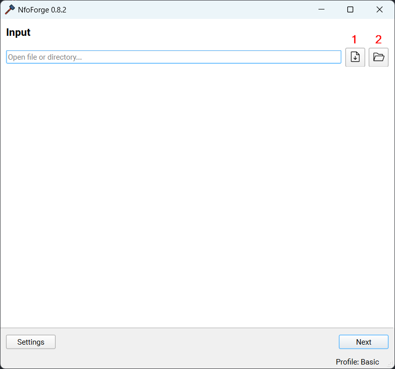
Open a file or folder to start processing files. Drag and drop is also supported in the entry bar.
- Open file.
- Open folder.
Once you've opened the path, you can simply select Next.
Media Search Page
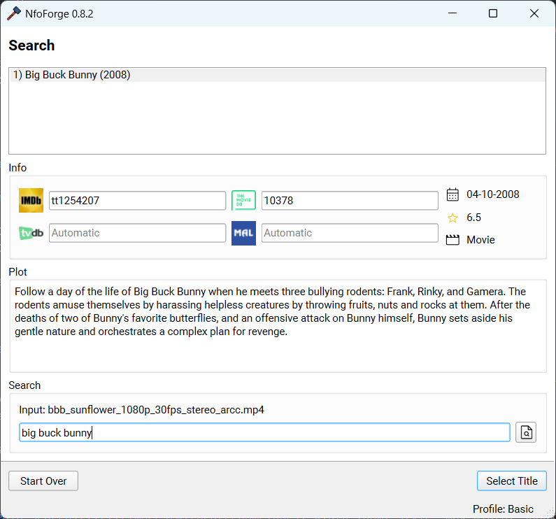
The page will immediately parse the file (or attempt to, if the name is somewhat structured) and return some results. If you find no results, refine the search below and try again. Once you have found the appropriate title, simply select it in the top window and press Select Title to continue to the next page.
This will parse TMDB, IMDb, TVDb, and Anilist to return metadata for the selected title.
Rename Page
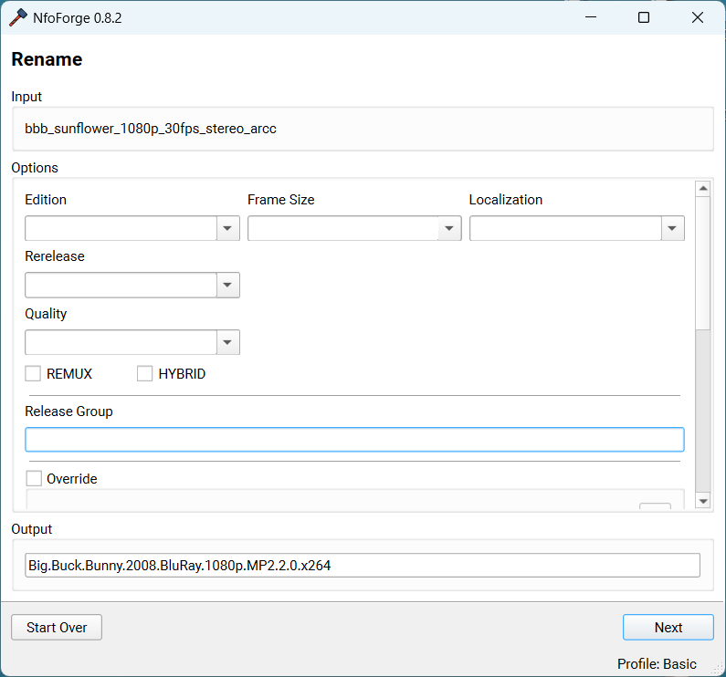
Info
As long as you have Rename Movie ticked in Settings -> Movie you will see this page. It is enabled by default.
You'll notice that the TokenReplacer has already used a combination of the filename, metadata, and MediaInfo to give you a clean/proper output: Big.Buck.Bunny.2008.BluRay.1080p.MP2.2.0.x264. This supports numerous overrides and selections, but those will be covered later in the guide. For now, you can simply click Next to continue.
Images Page
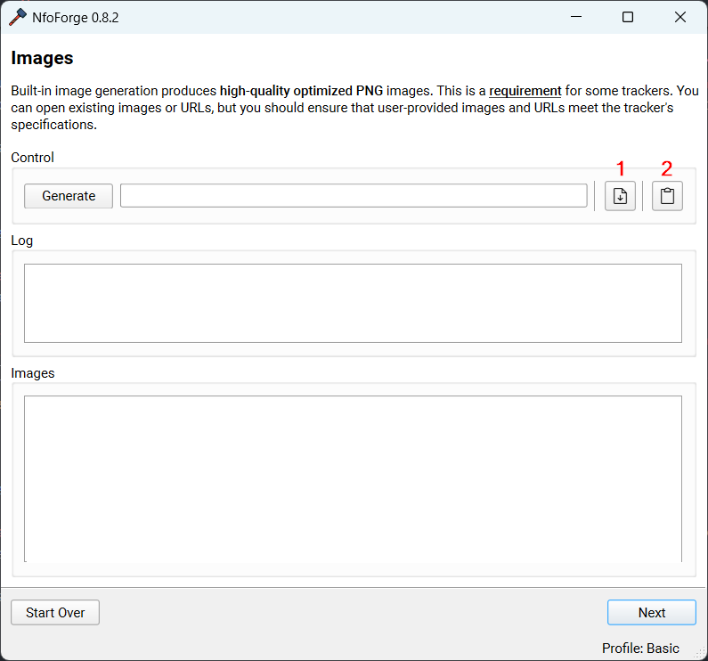
Info
As long as you have Enable Screenshots ticked in Settings 🠮 Screenshots you will see this page. It is enabled by default.
- Allows you to open images (.png/.jpeg) that have already been generated.
- Allows you to paste in any type of URLs.
Generally, you should just click Generate and allow NfoForge to generate images based on the current settings. This requires FFMPEG by default for Basic images. Depending on your device speed, storage speed, and configuration, this could take a few seconds to several minutes. Once it's done, you'll be greeted with the Image Viewer.
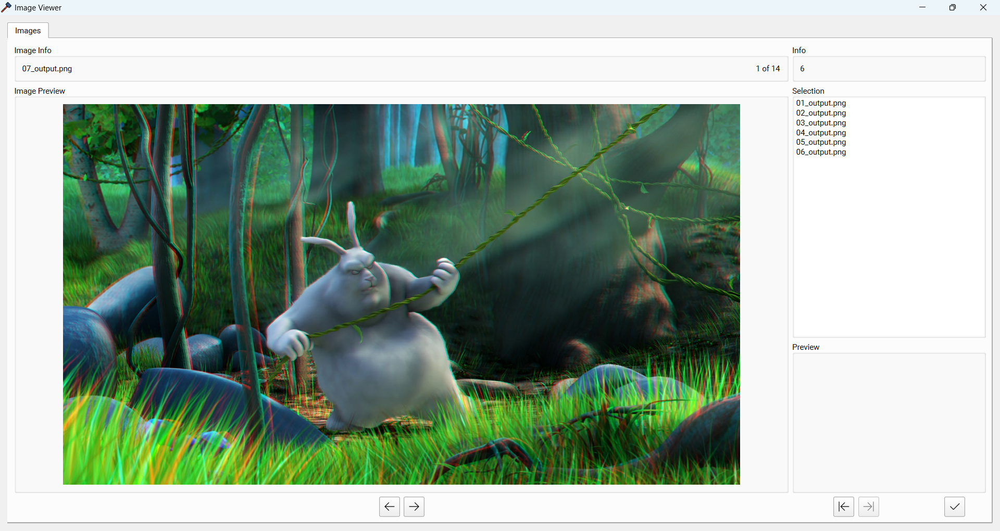
You can directly view the generated images and select the images you want to use for your upload. The left arrows navigate between images, and the arrows on the right select or deselect images. Once you have selected your desired images, you can select the check mark to close the window.

Select Next to continue.
Trackers Page
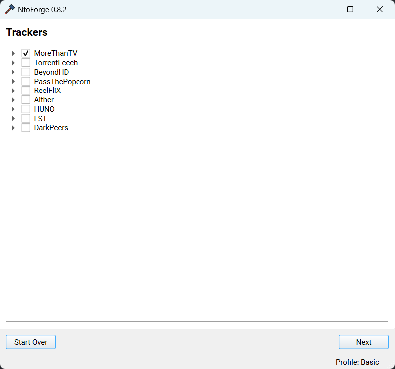
This page gives you a final chance to configure trackers and select which trackers you'd like to upload this release to. For this example, I'm going to use MoreThanTV with upload disabled (you can toggle this by expanding the tracker).
Select Next to continue.
Release Notes Page
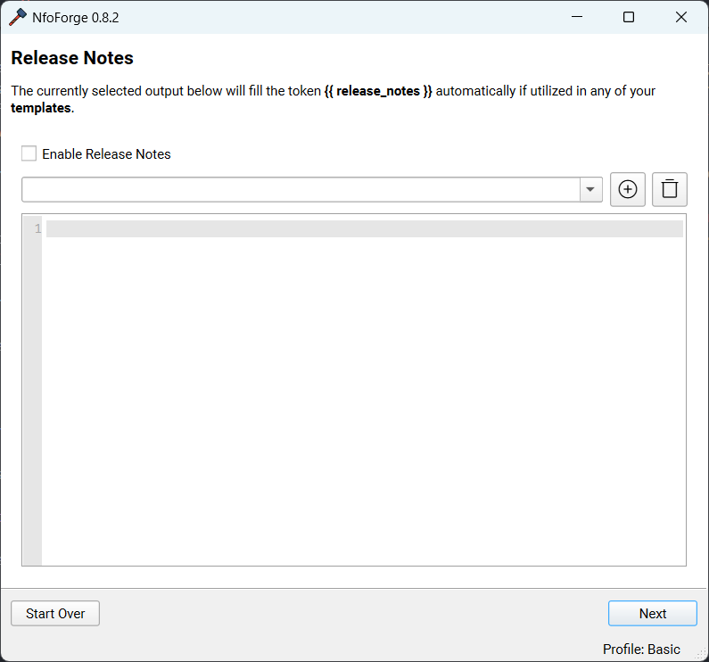
This page allows you to create, save, or select a custom release note to inject into the NFO. It will replace the token {{ release_notes }} if it exists in the template.
Select Next to continue.
Template Page
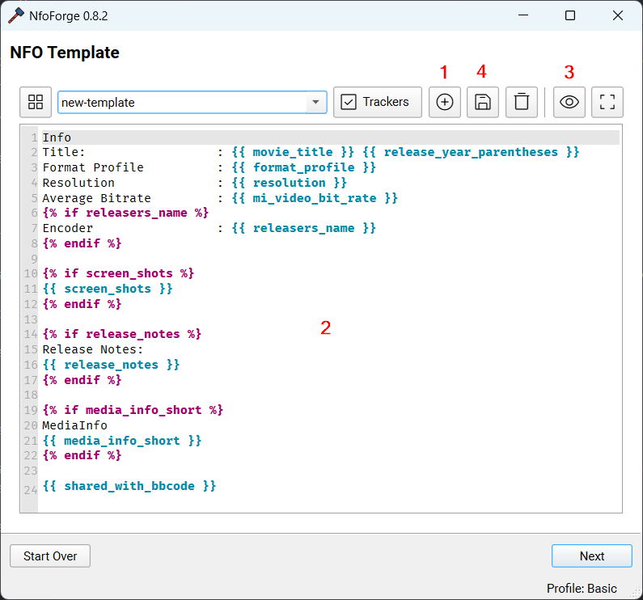
This page is quite advanced. However, for this example, we will go over basic usage. By default, there won't be any templates; you must create one to continue.
- Create a new template.
- You'll be greeted with a built-in default template that NfoForge provides.
- This template covers the basics and is almost enough to release properly to most trackers.
- You can customize it to your desire. A more in-depth guide of the token replacer and how it works will be covered later in the guide.
- For now, we can use this basic template to continue.
- You can preview the template.
- This will show what your expected template will look like. The only portions that won't appear are those filled by plugins and screenshots, as these are executed and filled at process time later in the wizard.
- Once satisfied with your template, you can click this to save changes or press CTRL + S with the text window in focus. You'll see Saved template in the status bar at the bottom of NfoForge.
Select Next to continue.
Process Page
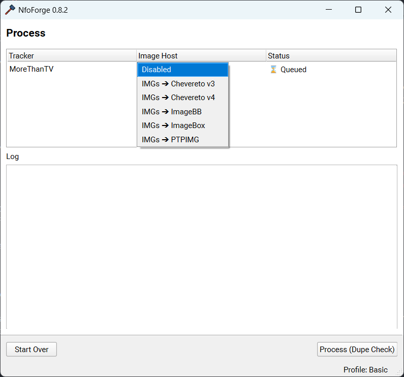
This is the final page where all the processing takes place. If you configured an image host, you'll see it in the drop-down menu.
Select the host and click Process (Dupe Check).
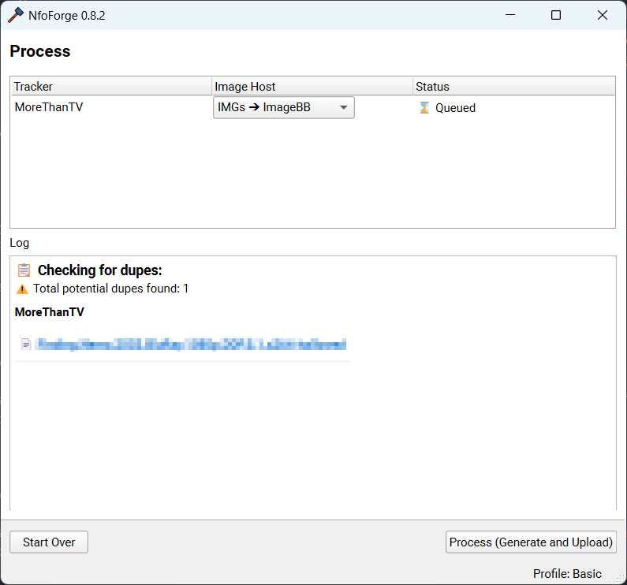
You'll notice that there is one duplicate release found. You can review this and decide if there is a duplicate for your release. If not, simply click Process (Generate and Upload) to continue.
Overview and Edit
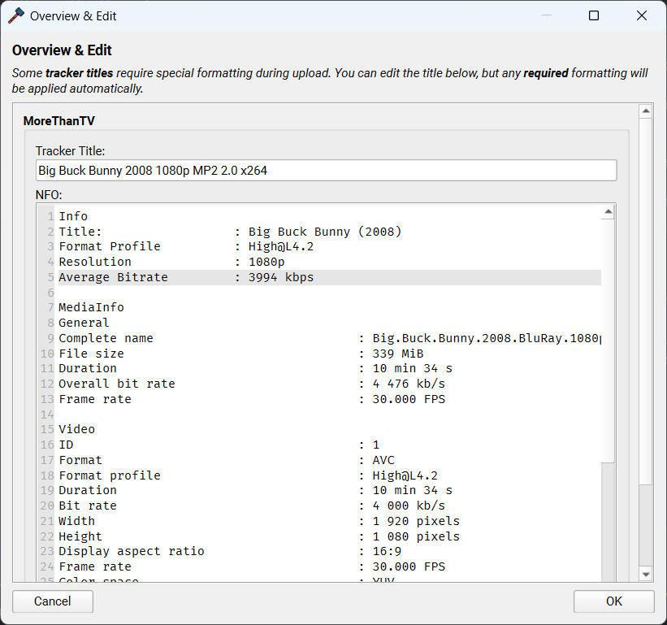
- If enabled (Settings 🠮 General 🠮 Prompt for Overview) this window will appear.
- You can edit the final formatted NFO.
- You can also edit the tracker title (if available).
After reviewing, press OK to apply your changes. If you close the window or press Cancel, your previous data will be used. Processing will continue automatically after you close this window.
Note: Some trackers require specific formatting to the tracker title. This will be applied during upload regardless of edits in this window.
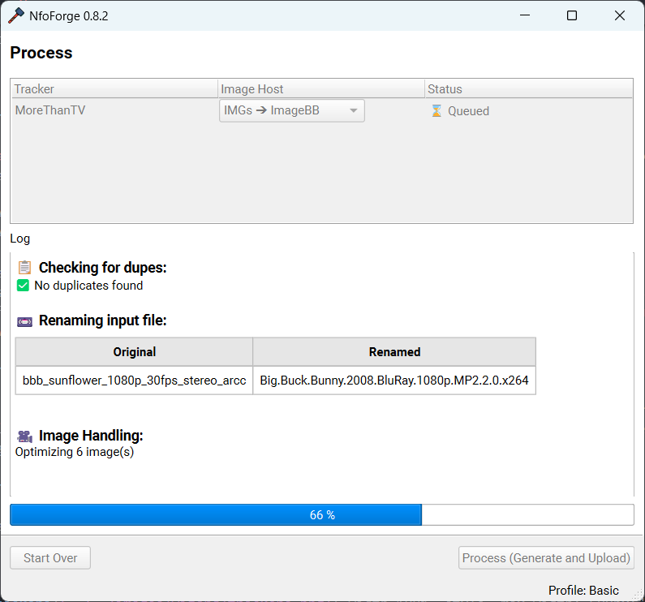
During processing, you'll notice everything is disabled other than the log window, so you can scroll up and down. After things are complete, you'll see an output similar to this.
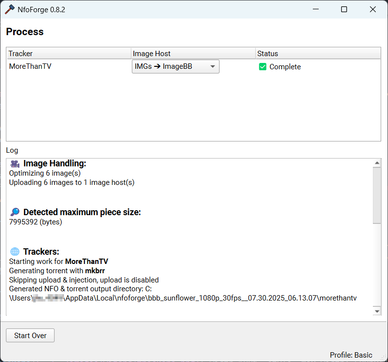
Notice the status ✅ Complete and no errors in the log. Your torrent should be uploaded to the selected tracker (if you chose to upload). Any generated torrents/NFO files can be found in the path displayed in the log window. You can view the created NFO for each tracker you selected.
Example from this guide
Info
Title: : Big Buck Bunny (2008)
Format Profile : High@L4.2
Resolution : 1080p
Average Bitrate : 3994 kbps
[url=https://i.ibb.co/VYcyXyG2/b81e26a4a850.png][img=340]https://i.ibb.co/DfHX3XF5/b81e26a4a850.png[/img][/url]
[url=https://i.ibb.co/DfNm7WkJ/ca45d57ee8fe.png][img=340]https://i.ibb.co/3mwV0dW3/ca45d57ee8fe.png[/img][/url]
[url=https://i.ibb.co/svgNNKBD/34ef957a129e.png][img=340]https://i.ibb.co/Fbhyy5Pf/34ef957a129e.png[/img][/url]
[url=https://i.ibb.co/7JqqVLBy/4f11bf7b7853.png][img=340]https://i.ibb.co/HDjjY3Rg/4f11bf7b7853.png[/img][/url]
[url=https://i.ibb.co/BVJxkSgL/480a23e43e8f.png][img=340]https://i.ibb.co/bgVZt8r1/480a23e43e8f.png[/img][/url]
[url=https://i.ibb.co/r233SG0B/c24fbb5b0575.png][img=340]https://i.ibb.co/nMBBvsmX/c24fbb5b0575.png[/img][/url]
MediaInfo
General
Complete name : Big.Buck.Bunny.2008.BluRay.1080p.MP2.2.0.x264.mp4
File size : 339 MiB
Duration : 10 min 34 s
Overall bit rate : 4 476 kb/s
Frame rate : 30.000 FPS
Video
ID : 1
Format : AVC
Format profile : High@L4.2
Duration : 10 min 34 s
Bit rate : 4 000 kb/s
Width : 1 920 pixels
Height : 1 080 pixels
Display aspect ratio : 16:9
Frame rate : 30.000 FPS
Color space : YUV
Chroma subsampling : 4:2:0
Bit depth : 8 bits
Audio #1
ID : 2
Commercial name : MPEG Audio
Codec ID : mp4a-6B
Bit rate : 160 kb/s
Channel(s) : 2 channels
Sampling rate : 48.0 kHz
Audio #2
ID : 3
Commercial name : Dolby Digital
Codec ID : ac-3
Bit rate : 320 kb/s
Channel(s) : 6 channels
ChannelLayout_Original : L R C LFE Ls Rs
Sampling rate : 48.0 kHz
Shared with [url=https://github.com/jesterr0/NfoForge]NfoForge v0.8.2[/url]